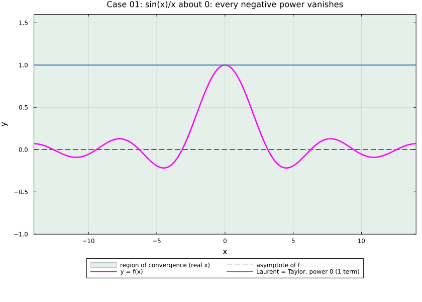
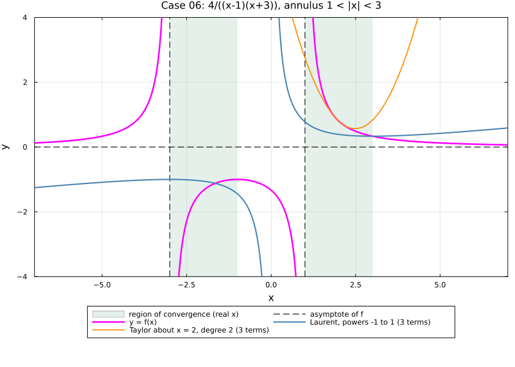
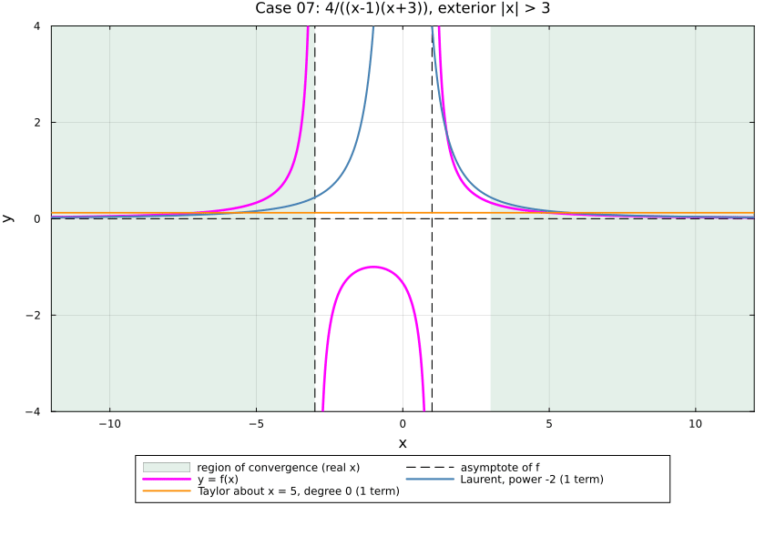

Laurent Series
Source inspiration: (Mathew 2000-2019).
Description
A Laurent series expands \(f\) in negative as well as positive powers of \(x-x_0\) to represent it around a singularity, or between singularities, where no Taylor series about \(x_0\) exists or converges. A Laurent series of \(f\) about a center \(x_0\), valid in an annulus \(r<|x-x_0|<R\) of the complex plane on which \(f\) is analytic, is
\[ f(x)=\sum_{k=-\infty}^{\infty} a_k (x-x_0)^k,\qquad a_k=\frac{1}{2\pi i}\oint_C \frac{f(z)}{(z-x_0)^{k+1}}\,dz, \]
where \(C\) is any positively oriented circle about \(x_0\) inside the annulus. The terms with \(k<0\) form the principal part. Laurent’s theorem needs only \(0\le r<R\le\infty\) and \(f\) analytic in the annulus, whatever singularities \(f\) has inside the inner circle or outside the outer one. For a given annulus the coefficients are unique, but a function with several singularities has a different series in each annulus about the same center.
If \(f\) is analytic on the whole disk \(|x-x_0|<R\), every negative-power coefficient is zero and the Laurent series is the Taylor series. If \(f\) is analytic on a connected region containing the annulus and has a non-removable singularity on or inside the inner circle (at the center when \(r=0\)), some negative power has a nonzero coefficient. Those powers do what a polynomial cannot: for \(k>0\), \((x-x_0)^{-k}\) is infinite at \(x_0\) and tends to \(0\) as \(|x|\to\infty\), while a polynomial has no vertical asymptote and, unless constant, no horizontal one.
In general, the series converges absolutely in the annulus and uniformly on every closed subannulus \(\rho_1\le|x-x_0|\le\rho_2\) with \(r<\rho_1<\rho_2<R\). The convergence is at least geometric: dropping the powers above \(N\) leaves an error \(O(q^N)\) for every \(q\) with \(|x-x_0|/R<q<1\), and dropping those below \(-M\) leaves \(O(q^M)\) for every \(q\) with \(r/|x-x_0|<q<1\). In Case 02, at \(x=0.9\) with \(R=1\), each frame adds the next even power and multiplies the error by exactly \(0.81=0.9^2\).
Each series diverges outside the widest annulus of analyticity about \(x_0\) containing its own: in Case 02 the error at \(x=1.2\) grows with every frame, and the disk series of Case 05, used at \(x=1.5\), gives \(-582\) against \(f=1.78\). Near either circle convergence is slow: in the last frame of Case 06 the error is \(0.0013\) at \(x=2\), but \(3.19\) at \(x=1.1\) and \(6.44\) at \(x=-2.9\). In Case 08, where \(r=0\), the last sum’s error exceeds \(0.01\) for every \(0<|x|<0.27\).
With no negative powers a Laurent series is a Taylor series; its positive and negative parts are power series in \(x-x_0\) and \(1/(x-x_0)\); and Padé approximation follows poles and asymptotes with a rational function instead.
Animations
Each frame adds terms to a partial sum of the Laurent series (blue) and compares it with \(f\) (magenta). Dashed black lines are the asymptotes of \(f\). Green shading marks where the series converges on the real line; outside it the partial sum is not expected to approximate \(f\). In the cases with negative powers, the orange curve is the Taylor polynomial of \(f\) about a regular point inside the shaded region, with the same number of terms as the blue sum. The legend lists the powers included.
Mathews’ Laurent module (Complex Analysis §7.3) has no animations. The examples below were chosen for this page and are not attributed to him, although his module also works a disk, annulus and exterior example of the kind in Cases 05–07.
Case 01 — Reduces to Taylor: \(f(x)=\dfrac{\sin x}{x}\) about \(0\), all \(x\)
Behavior: Dividing \(\sin x=x-x^3/6+x^5/120-\cdots\) by \(x\) leaves \(1-x^2/6+x^4/120-\cdots\), with no negative power. The singularity at \(0\) is removable, and this Laurent series is the Taylor series of \(f\). It converges for every \(x\). The interval around \(0\) on which the sum stays within \(0.01\) of \(f\) widens with every frame, from about \(|x|\le 0.25\) to about \(|x|\le 10.9\).

Case 02 — Reduces to Taylor: \(f(x)=\dfrac{1}{1+x^2}\) about \(0\), \(|x|<1\)
Behavior: \(f\) is analytic at \(0\), so its series there has no negative powers: \(1-x^2+x^4-\cdots\). The radius of convergence is \(1\), set by the poles at \(\pm i\), which are not on the real line. At \(x=0.9\) the error falls with every frame, from \(0.448\) to \(0.044\). At \(x=1.2\), outside the region, it grows with every frame, from \(0.590\) to \(32.6\).

Case 03 — Vertical asymptote: \(f(x)=\dfrac{\sin x}{x^3}\) about \(0\), \(0<|x|<\infty\)
Behavior: For every \(x\ne 0\), \(f(x)=x^{-2}-\tfrac16+\tfrac{x^2}{120}-\cdots\). The principal part \(x^{-2}\) carries the blow-up at \(0\): \(f(x)-x^{-2}\to-\tfrac16\) as \(x\to 0\). At \(x=0.05\), where \(f=399.83\), the last frame’s sum (powers \(-2\) to \(16\)) also gives \(399.83\), while the degree-9 Taylor polynomial about \(x=1\), with the same 10 terms, gives \(40.6\). The full Taylor series about \(x=1\) converges only on \(0<x<2\). As \(|x|\to\infty\), the frame 1 sum \(x^{-2}\) tends to the horizontal asymptote \(y=0\) of \(f\), the frame 2 sum \(x^{-2}-\tfrac16\) tends to \(-\tfrac16\), and every sum from frame 3 on contains a positive power and is unbounded. In Case 04, every partial sum tends to the horizontal asymptote.

Case 04 — Horizontal asymptote: \(f(x)=\dfrac{x^2+1}{x^2-1}\) in powers of \(1/x\), \(|x|>1\)
Behavior: For \(|x|>1\), \(f(x)=1+2x^{-2}+2x^{-4}+\cdots\). Every partial sum tends to \(1\) as \(|x|\to\infty\), which is the horizontal asymptote of \(f\). In the last frame (powers \(-18\) to \(0\)) the sum is within \(0.0011\) of \(f\) on \(1.5\le|x|\le 10\). The degree-9 Taylor polynomial about \(x=3\), with the same 10 terms, leaves the window near \(x=5.69\) and equals \(-3.06\times 10^{4}\) at \(x=10\), where \(f=1.0202\); the full Taylor series about \(x=3\) converges only on \(1<x<5\). Inside \(|x|<1\) the series diverges: at \(x=0.5\) the last sum is \(6.99\times 10^{5}\), while \(f=-1.67\).

Case 05 — One function, the disk: \(f(x)=\dfrac{4}{(x-1)(x+3)}\), \(|x|<1\)
Behavior: Cases 05–07 expand the same function, written as \(f(x)=\frac{1}{x-1}-\frac{1}{x+3}\), in the three regions set by its poles at \(x=1\) and \(x=-3\). In the disk both fractions expand in positive powers, so the series is a Taylor series with \(a_k=-1-(-1)^k/3^{k+1}\) for \(k\ge 0\). At \(x=0.5\) the last frame gives \(-2.28559\) against \(f=-2.28571\). At \(x=1.5\), outside the disk, it gives \(-582\) against \(f=1.78\).

Case 06 — One function, the annulus: \(f(x)=\dfrac{4}{(x-1)(x+3)}\), \(1<|x|<3\)
Behavior: In the annulus, \(1/(x-1)\) expands in negative powers and \(-1/(x+3)\) in positive powers, so \(a_k=-(-1)^k/3^{k+1}\) for \(k\ge 0\) and \(a_k=1\) for \(k<0\). One series covers both intervals \(-3<x<-1\) and \(1<x<3\). In the last frame (powers \(-12\) to \(12\)) its error is below \(0.19\) on \(-2.5\le x\le-1.5\) and below \(0.02\) on \(1.5\le x\le 2.5\). The degree-24 Taylor polynomial about \(x=2\), with the same 25 terms, is more accurate on the second interval (error below \(10^{-7}\)), but the full Taylor series about \(x=2\) converges only on \(1<x<3\), and at \(x=-2\) the polynomial is \(3.8\times 10^{14}\), where \(f=-1.33\).

Case 07 — One function, the exterior: \(f(x)=\dfrac{4}{(x-1)(x+3)}\), \(|x|>3\)
Behavior: Outside \(|x|=3\) both fractions expand in negative powers only, so \(a_{-k}=1-(-3)^{k-1}\) for \(k\ge 1\). The \(x^{-1}\) coefficient is zero and the series begins \(4x^{-2}-8x^{-3}+28x^{-4}-\cdots\). With no constant or positive power, every partial sum tends to \(0\) as \(|x|\to\infty\), the horizontal asymptote of \(f\). In the last frame (powers \(-13\) to \(-2\)) the error is below \(7\times 10^{-4}\) on \(5\le|x|\le 12\). The degree-11 Taylor polynomial about \(x=5\), with the same 12 terms, equals \(-75.0\) at \(x=12\), where \(f=0.0242\); the full Taylor series about \(x=5\) converges only on \(1<x<9\).

Case 08 — Infinitely many negative powers: \(f(x)=e^{1/x}\) about \(0\), \(0<|x|<\infty\)
Behavior: For every \(x\ne 0\), \(e^{1/x}=1+x^{-1}+x^{-2}/2!+\cdots\). The infinitely many negative powers make \(0\) an essential singularity: \(f\to+\infty\) as \(x\to 0^+\), \(f\to 0\) as \(x\to 0^-\), and \(f\to 1\) as \(|x|\to\infty\). Every partial sum tends to \(1\) as \(|x|\to\infty\) and lies below \(f\) for \(x>0\). At \(x=0.2\) the last sum (powers \(-11\) to \(0\)) gives \(147.6\) against \(f=148.4\), while the degree-11 Taylor polynomial about \(x=1\), with the same 12 terms, gives \(44.5\). The full Taylor series about \(x=1\) converges only on \(0<x<2\). Any sum with a negative power has a pole at \(0\), so close to \(0\) on the left it departs from \(f\): at \(x=-0.1\) the last sum is about \(-1163\), while \(f\approx 4.5\times 10^{-5}\).